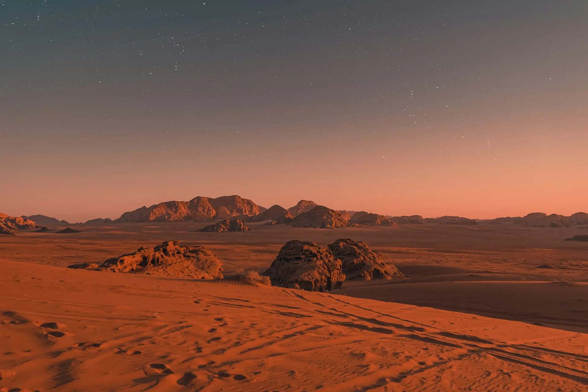

BITÁCORA ESTELAR
Revisa las Noticias Estelares.
ANÁLISIS DE DATOS
El Vacío es un Código: Descifrando la señal 0XF5 en la Nube de Oort.
Nuestros astrónomos han detectado una señal recurrente, no natural, que desafía las leyes conocidas de la física. Exploramos su origen y potencial significado...
EXPEDICIÓN
El Nuevo Horizonte: La vida microbiana hallada en Exo-Planeta T-12.
TECNOLOGÍA
La nueva IA Cuántica, ¿El fin de la necesidad de tripulación humana?
TECNOLOGÍA

El Ojo del Telescopio Webb: Revelando el 'Jardín Escondido' de la Nebulosa de Carina.
EXPEDICIÓN
Los Archivos Perdidos de Marte: Evidencia geológica de un antiguo océano subsuperficial.
CRÓNICAS RECIENTES
PolíticaEl Senado Galáctico debate la regulación de la tecnología de invisibilidad.
02.11.3305 DescubrimientoUn nuevo tipo de materia oscura detectada cerca de Cygnus X-1.
01.11.3305 MisionesFase Alpha completada: Sonda D-90 entra en hibernación profunda.
31.10.3305 TecnologíaAvance en fusión fría: El reactor A-10 logra 72 horas de operación continua.
28.10.3305 ExploraciónSe confirma la presencia de agua líquida bajo la superficie de Europa I.
24.10.3305 CulturaEl "Festival Galáctico de la Luz" inicia en la estación orbital L-5; se esperan 1M de visitantes..
17.10.3305
CULTURA
Los mejores videojuegos de simulación espacial del milenio.
HISTORIA
El Colapso de la Antigua Federación: Lecciones para la Deriva Actual.

CULTURA
Viaje a Distorsión: La verdad (y el peligro) detrás del concepto Alcubierre.

EXPEDICIÓN
Rendición de Cuentas: ¿Por qué la Humanidad necesita colonizar el cinturón de asteroides?

ANÁLISIS DE DATOS